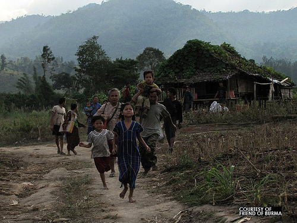
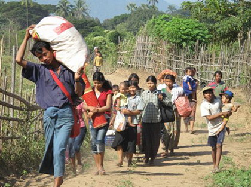
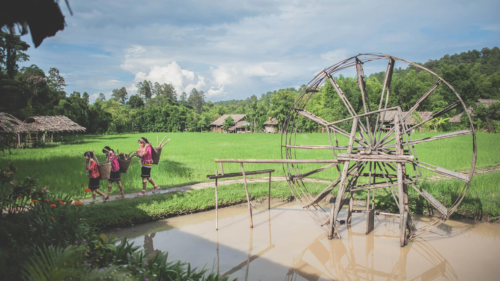

เมื่อ 3600 ปีที่แล้ว ชาวกะยันได้อาศัยอยู่บริเวณมองโกเลีย โดยอยู่ในมณฑลยูนนาน ของประเทศจีน แล้วชาวกะยันได้ทำการอพยพลงมาอยู่ที่รัฐคะยาของประเทศพม่า
สาเหตุการอพยพเข้าสู่ประเทศไทย
ของชาวกะยัน

การกวาดล้างของพม่า
จากการกวาดล้างชาวกะยันของพม่า
ทำให้ชาวกะยันต้องถอยร่นลงมาเรื่อยๆจนมาถึงตำบลผาบ่อง
และปางหมูในจังหวัดแม่ฮ่องสอน ซึ่งประเทศไทยได้ให้ความช่วยเหลือจากการที่ต้องลี้ภัยการสู้รบ

หลีกหนีความอดอยาก
เนื่องจากการรุกรานของทหารพม่าทำให้ชาวกะยันจำเป็น
ต้องอพยพอยู่บ่อยครั้ง ผลผลิตและไร่นาที่ทำไว้จึงยังไม่สมบูรณ์พอที่จะเก็บเกี่ยวได้ทัน

การจัดตั้งศูนย์ท่องเที่ยว
เนื่องจากผู้ว่าราชการจังวัดแม่ฮ่องสอนมีนโยบายที่จะเปิดจังหวัดเพื่อการท่องเที่ยว
และได้เห็นถึงความแปลกใหม่ของชาวกะยัน
จึงได้จัดตั้งศูนย์ท่องเที่ยวหมู่บ้านกะเหรี่ยงคอยาวขึ้น
ทำให้ชาวกะยันมีรายได้จากการท่องเที่ยวและชักชวนกันอพยพตามมา